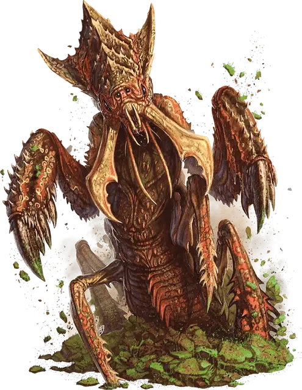

Анхег
Ankheg
Большой Монстр, без мировоззрения

Класс Доспеха 14 (природный доспех, 11 когда сбит с ног)
Хиты 39 (6к10 + 6)
Скорость 30 футов, копая 10 футов
| мод | спас | ||
|---|---|---|---|
| СИЛ | 17 | +3 | +3 |
| ЛОВ | 11 | +0 | +0 |
| ТЕЛ | 13 | +1 | +1 |
| мод | спас | ||
|---|---|---|---|
| ИНТ | 1 | −5 | −5 |
| МДР | 13 | +1 | +1 |
| ХАР | 6 | −2 | −2 |
Чувства тёмное зрение 60 футов, чувство вибрации 60 футов, пассивное Восприятие 11
Опасность 2 (450 опыта)
Бонус мастерства +2
Среда обитания Лес, Луг
Действия
Укус. Рукопашная атака оружием: +5 к попаданию, досягаемость 5 футов, одна цель. Попадание: 10 (2к6 + 3) рубящего урона плюс 3 (1к6) урона кислотой. Если цель — существо с размером не больше Большого, она становится схваченной (Сл высвобождения 13). Пока цель схвачена, анхег может кусать только её, но зато атаки совершает с преимуществом.
Кислотная струя (перезарядка 6). Анхег плюет кислотой линией длиной 30 футов и шириной 5 футов, при условии, что он не держит в захвате существа. Все существа в этой линии должны совершить спасбросок Ловкости Сл 13, получая урон кислотой 10 (3к6) при провале, или половину этого урона при успехе.
Описание
Анхег похож на огромное насекомое с множеством лап. Его длинные усики подергиваются, реагируя на любое движение вокруг. На концах его лап огромные крюки, пригодные как для рытья, так и для того, чтобы хватать добычу. Его мощные челюсти способны перекусить небольшое дерево пополам.
Скрывающиеся в земле. Своими мощными челюстями анхег роет извилистые туннели глубоко под землей. Когда анхег охотится, он роет вверх, ожидая чуть ниже поверхности земли, пока его усики не уловят движение сверху. Затем он выпрыгивает из-под земли, хватая жертву челюстями. Он дробит и измельчает жертву, одновременно выделяет кислотные ферменты, которые помогают растворить жертву для облегчения переваривания. Также анхег может плеваться кислотой в своих врагов.
Проклятье лесов и полей. Несмотря на то, что анхеги получают часть питательных веществ из почвы, в которой они прячутся, они должны дополнять свой рацион свежим мясом. Пастбища, изобилующие пасущимся скотом, и леса, полные дичи, это основные охотничьи угодья анхегов. Поэтому анхеги это проклятье фермеров и охотников.
Земляные туннели. Когда анхег копает под землей, он оставляет за собой узкий, частично обвалившийся туннель. В этих туннелях можно обнаружить частички сброшенного хитина, остатки яиц анхегов или кошмарные останки жертв анхегов, в том числе монеты и другие сокровища, разбросанные во время нападения.